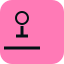

From Source to Market.
Ethical and Sustainable Minerals Should be the Standard.

Our Core Commitments
ITSCI Traceability
The ITSCI program ensures minerals are tracked from mine sites to the point of export.
See MembershipZero Child Labour
“If you continue to use the labour of children as the treatment for the social disease of poverty, you will have both poverty and child labor to the end of time.” – Grace Abbott
Read Our Policy On Child Labor
Gender Equality
We promote gender equality in the workplace and throughout our agreements with partners, prioritizing equal opportunity in recruitment and training.
Learn More on Our Gender PolicyProactive Risk Management
We identify, assess, and manage supply-chain risks through audits, mapping and mitigation plans aligned with the OECD Due Diligence Guidance.
Explore Our OECD DDG FrameworkOur Due Diligence Framework
A step-by-step approach to verify chain-of-custody, identify risks and take measurable action.
Embed Responsible Policy
We publicly commit to and integrate the OECD DDG and international standards into contracts and supplier agreements.
Identify & Assess Risk
We map the supply chain and conduct on-ground assessments using ITSCI data and internal audits.
Design & Implement Mitigation
We partner with suppliers and communities to design measurable improvement plans and fund remediation where needed.
Independent Audit
Our processes and chain of custody are verified annually by independent auditors (e.g., RMB) to ensure compliance.
Report & Evolve
We publicly report our findings and invest in continuous improvement — including emerging traceability tools like Minespider.
Safety: The Non-Negotiable.
- We prioritize the safety of our workers and communities above all else.
- Regular, documented risk assessments identify and mitigate potential hazards.
- Mandatory comprehensive safety training and modern equipment for all personnel.
- Strict, enforced safety protocols are standard at all our sites and with our partners.
Protecting Rights, Building Trust.
- We are committed to upholding the highest human rights and fair labour practices.
- We strictly prohibit forced labour, discrimination, and harassment.
- We provide equal opportunities based on merit, fostering a diverse and inclusive workplace.
- We maintain open dialogue with local communities to address concerns and support well-being.
Independently Verified & Public Resources
Our adherence is validated by leading organizations — and our documents are available to download.
Leading the Industry Forward.
Our current framework is the baseline — we are committed to pioneering better practices, training our team on blockchain traceability platforms like Minespider, and continuing to improve independent verification, transparency and our community impact.